展开阅读目录
- 输入接口、连续运行与独立关断
- 先看结论：修正了哪些理想化条件
- 从架构看：A、B与VCSEL各控制什么
- 比较什么，哪些条件固定
- 位速率、余量与能耗的读法
- 为什么输入缓冲也是驱动设计
- VCSEL · 把有限驱动能力接回电路
- VCSEL · 同净6.4 Gb/s下的完整边界
- VCSEL · 同净8.8 Gb/s下的完整边界
- VCSEL · 输入级的能量不能藏在边界外
- VCSEL · 从输入边沿到接收余量
- VCSEL · 单项修改如何改变充放电
- VCSEL · 冻结后复核与仍未闭合的边界
- MicroLED · 连续供能与电容储能
- A · 连续四帧的实际结果
- B · 连续四帧的实际结果
- 保护问题：偏置低，不等于发光通路已切断
- 首版v2保护 · 可求解仍会失败
- 从波形追到两条非预期电流路径
- A · 限制开通斜率，同时保留快速关断
- A · 用栅极RC减慢供电恢复
- B · 数据必须等发光通路建立后再进入
- B · READY与数据门控的真实晶体管
- B · 快关不等于越快越好
- 保留失败：哪些改动有效，哪些仍不够
- 100 Ω控制源：改变了什么，没有证明什么
- 正常连续通信 · 修改前后的同条件比较
- A · 新保护加入后，正常通信是否退化
- B · 新保护加入后，正常通信是否退化
- B · 新增能耗主要落在哪个端口
- A · 从关断到重新接收的量化结果
- B · 从关断到重新接收的量化结果
- 冻结后确认：步长与新数据窗口
- 连续运行波形：能量变化与固定相位余量
- A · 从关断全程看到恢复体结应力
- A · 导电电流与位移电流必须区分
- B · 关断时抑制内部前馈注入
- B · 把关断速度与过冲一起优化
- B · 关断尾段为什么仍值得优先研究
- 校验测量链：失败记录怎样变成可信结论
- 为什么这还不是实际接口合规
- 下一步先补哪些工程证据
- 产品与流片：本轮交付处在什么位置
- 复现、失败保留与报告索引
OPEN MICROLED DRIVER ASIC · 2026-11-15 · 原理图级研究
输入接口、连续运行与独立关断
MicroLED A/B 与 VCSEL 高速驱动研究 · 2026年11月15日阶段增补
这次把三个常被理想化的条件放回电路：上游能提供多少驱动电流，连续数据期间电源和储能如何变化，以及数据仍在翻转时能否真正关闭发光通路。
阅读顺序：先看下一页的结果，再沿“问题 → 电路机制 → 单项修改 → 原生波形 → 接收与能耗 → 未解决项”逐步深入。原始失败、输入快照、源码身份与数据片段保留。
| 本轮实做 | 证据边界 |
|---|---|
| VCSEL：有限MOS输入级、输入负载改进 | 名义晶体管仿真；不是现成FPGA/SerDes合规测试 |
| MicroLED A/B：不重置状态的连续帧与保护 | 实际模拟时长单独报告；不是电热稳态或寿命试验 |
| 电路图、原生波形、能量与接收复算 | 新增原理图候选未完成新版图、DRC/LVS/PEX或实物BER |
前阶段48页报告继续作为历史基线：新方法与产品路径。本报告给出新增证据，不改写旧结果的测试条件。
OPEN MICROLED DRIVER ASIC · 2026-11-15 · 原理图级研究
先看结论：修正了哪些理想化条件
| 验证点 | 完整边界的能量 | 接收与时间范围 |
|---|---|---|
| A · 基线 → 新增关断 | 1.1634 → 1.1587 pJ/b | 0.4542 UI；各连续10.24 µs |
| B · 基线 → 新增关断 | 0.8564 → 1.0155 pJ/b | 0.3947 UI；各连续10.24 µs |
| VCSEL · 有限输入修正 | 4.7106 pJ/b | 0.4383 UI；净8.8 Gb/s |
VCSEL原单级候选接上较弱MOS输入级后，在8.8 Gb/s虽零观察错，但幅度/时序不通过；加宽上游输出MOS恢复余量，新增能耗同时进入结果。减轻输入下拉负载的尝试更省电，却没有恢复8.8 Gb/s。
A/B连续运行先检查供轨和储能，再评价每位能耗；独立关断单独验证数据持续翻转时的导电电流、LED端压、过渡峰流和恢复。保护是否通过及其代价见后面的前后对照。
B新增保护和门控后，末帧E+相对基线变化18.58%，单侧时间余量由0.4251变为0.3947 UI。保护功能有明确能量与时序代价，不能沿用未加保护时的性能排名。
新增A/B保护仅在净1.6 Gb/s验证，不能继承前版无新增保护时的A 2.0、B 1.8 Gb/s结果。以上是名义模型与实际时长内的研究证据，不是实物接口合规、长期热稳态、光学BER或流片资格。
OPEN MICROLED DRIVER ASIC · 2026-11-15 · 原理图级研究
从架构看：A、B与VCSEL各控制什么
| 路径 | 电流如何建立 | 本轮检查位置 |
|---|---|---|
| MicroLED A 电压驱动 | 参考分压与反馈建立VH/VL两条输出轨，CMOS输出级切换LED阴极电压，电流由LED的I-V关系决定；它不是恒流源。 | 输出轨持续供能；新增高边隔离与跨LED钳位，检查其寄生和瞬态影响。 |
| MicroLED B 电流转向 | 参考与电流镜建立约25 µA偏置和75 µA调制尾电流。调制电流在LED/虚支路间转向，形成25/100 µA两级。 | 参考保持工作时如何独立关光；输出前馈电容在关断中仍可能注入电荷。 |
| VCSEL 偏置与调制 | 参考反馈设定约3 mA偏置和4 mA调制，稳压与预驱动推动换流MOS，形成3/7 mA。光学动态使用既有850 nm研究代理。 | 内部缓冲减级后，更大的输入栅负载由谁驱动、能耗由谁承担。 |
A基线为20 MOS（6只电压输出核心、14只轨反馈）；B为21 MOS（9只核心、12只参考）。VCSEL当前单级核心69 MOS，旧双级73 MOS。保护和上游输入的新MOS另计，所有计数都只对应明确网表。
驱动晶体管仍采用GF180MCU硅CMOS模型，按节点电压选择3.3 V或6 V器件。发光器件与驱动MOS的材料、工作机理分开处理；本轮没有更换驱动工艺。
“单级”“A/B”是本项目候选的简称，不是行业通用产品规格。本报告检验具体连接和参数，不以架构名称预判优劣。
OPEN MICROLED DRIVER ASIC · 2026-11-15 · 原理图级研究
比较什么，哪些条件固定
| 项目 | MicroLED A/B | VCSEL |
|---|---|---|
| 参考光源 | 20 µm黄光静态参考；200 fF假设 | 850 nm图读研究代理；150 fF |
| 导电电流目标 | 25 / 100 µA，两态DC误差≤1% | 3 / 7 mA，两态DC误差≤1% |
| 串联封装假设 | 1 Ω / 0.5 nH | 0.5 Ω / 0.2 nH |
| 光学与接收 | 200 ps单极点、1 GHz RX | 既有光学代理、5 GHz RX |
| 名义条件 | TT，27°C | TT，25°C |
| 数据输入 | 既有PWL命令及源网络；保护逻辑另计 | 本轮新增有限CMOS输出级；更上游命令仍理想 |
| 主要观察点 | 净1.6 Gb/s连续与关断 | 净6.4 / 8.8 Gb/s有限接口 |
两类光源分别与自己的基线比较。不能用不同电流、波长、光学模型和接收器下的pJ/b直接断言MicroLED或VCSEL效率更高。
同样的接收判据：零训练/验证错误，幅度余量≥7.5 µAeq，单侧时间余量≥0.37线路UI，同时满足全部MOS端压/体结与正常工作模型范围。µAeq是归一化接收量，不是实测光电探测器电流。
OPEN MICROLED DRIVER ASIC · 2026-11-15 · 原理图级研究
位速率、余量与能耗的读法
净速率/线路速率固定为32/37。每帧4736个线路位，对应4096个用于验证的载荷位；所有供电与开销都计入这一帧。1.6 Gb/s净速率对应1.85 GBd，线路UI约540.54 ps；8.8 Gb/s对应10.175 GBd，UI约98.28 ps。这是研究计量合同，不表示已实现实际FEC或通信协议栈。
| 量 | 定义与用途 |
|---|---|
| 幅度余量 | 判决样本到固定门限的最小有符号距离；负值表示该样本判错。 |
| 单侧时间余量 | 在冻结判决条件下，采样点到最近错误边界的距离；本轮门槛为0.37 UI。 |
| E+ / E− / E_net | 源端正向供能、返还源的能量、两者之差；分别积分，不混作热耗散。 |
| pJ/尝试净位 | 全帧供能除4096。失败案例也有数值，但不能按其能耗声称可靠吞吐收益。 |
| 零观察错 | 短的确定性片段通过现有判决；没有噪声、抖动统计和误码置信界，不能写成BER认证。 |
训练评分仅使用标签64-511和576位之前的波形。新留出窗口预声明为PRBS15周期偏移8192，即[8192,12928)，种子0x57ae。参数先冻结，再运行留出。它是未参与调参的确定性窗口，不是随机独立样本。
OPEN MICROLED DRIVER ASIC · 2026-11-15 · 原理图级研究
为什么输入缓冲也是驱动设计
删去一级内部缓冲后，原来由小MOS栅极承受的输入，变成直接驱动更大的末级反相器栅极。理想PWL电压源可强行维持20 ps边沿；有限MOS输出级必须先给这些栅电容充放电，电压才能改变。
近似关系是I≈C·dV/dt、t_edge≈Q_gate/I_available。实际MOS的电容和电流随电压变化，另有米勒效应、交越导通和电源压降，因此这个关系用于判断原因，数值仍以晶体管波形为准。
加宽上游MOS能提高电流能力、降低输出电阻，也增大上游命令端的栅电容与切换取能。另一方面，减轻2.5 kΩ输入下拉可以减少静态分流和高电平压降，但可能改变过冲、默认状态和噪声敏感性。两项必须分别试验。
本轮上游用GF180 CMOS实现，命令端仍为理想0-3.3 V、20 ps信号；新增供电VPHY和两路命令端取能一并计入。这比理想输出电压源更接近有限驱动，仍未实现完整FPGA/SerDes发送器。
OPEN MICROLED DRIVER ASIC · 2026-11-15 · 原理图级研究
VCSEL · 把有限驱动能力接回电路
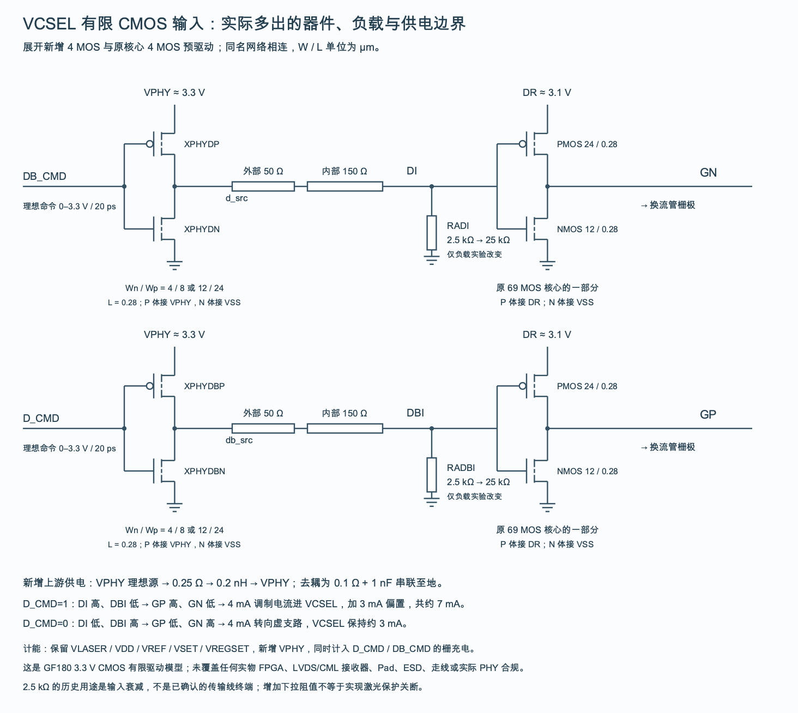
单级核心69 MOS，加上本轮4只上游MOS后共73 MOS；旧双级核心73 MOS加同样上游后共77 MOS。器件总数、尺寸和供电位置都要写清，不能只用“少一级”代表系统更省电。
OPEN MICROLED DRIVER ASIC · 2026-11-15 · 原理图级研究
VCSEL · 同净6.4 Gb/s下的完整边界
| 改动 | 幅度 µAeq | 时间 UI | E+ pJ/b | 联合 |
|---|---|---|---|---|
| 双级 + 4/8 µm输入 | -32.824 | 0.00000 | 5.64685 | 域外诊断 |
| 单级 + 12/24 µm输入 | 31.657 | 0.47694 | 6.13527 | 通过 |
| 单级 + 4/8 µm输入 | 21.934 | 0.39945 | 5.63170 | 通过 |
| 单级 + 4/8 µm + 25 kΩ | 31.317 | 0.37377 | 5.35424 | 通过 |
每行都包含VLASER、VDD、VREF、VSET、VREGSET、两路命令和新增VPHY共8个端口。命令仍为理想PWL；其送入MOS栅极的能量已计入，生成这些命令的更上游逻辑/时钟尚未建模。
每个候选先验证3/7 mA两态DC与所有MOS端压。接收幅度/时间、模型域和应力必须同时满足；即使零观察错，余量不够仍列失败。
“域外诊断”表示电流越过2-7.5 mA参考域，其光学/RX数值不能作为可信链路性能。旧双级保留50 Ω内部阻尼，单级为150 Ω，因此旧架构对照不是只改变级数的因果试验。失败点的pJ/b不能代表有效吞吐收益。
OPEN MICROLED DRIVER ASIC · 2026-11-15 · 原理图级研究
VCSEL · 同净8.8 Gb/s下的完整边界
| 改动 | 幅度 µAeq | 时间 UI | E+ pJ/b | 联合 |
|---|---|---|---|---|
| 单级 + 12/24 µm输入 | 29.907 | 0.43827 | 4.71062 | 通过 |
| 单级 + 4/8 µm输入 | 1.827 | 0.10710 | 4.15778 | 失败 |
| 单级 + 4/8 µm + 25 kΩ | 0.333 | 0.03516 | 4.00426 | 失败 |
每行都包含VLASER、VDD、VREF、VSET、VREGSET、两路命令和新增VPHY共8个端口。命令仍为理想PWL；其送入MOS栅极的能量已计入，生成这些命令的更上游逻辑/时钟尚未建模。
每个候选先验证3/7 mA两态DC与所有MOS端压。接收幅度/时间、模型域和应力必须同时满足；即使零观察错，余量不够仍列失败。
“域外诊断”表示电流越过2-7.5 mA参考域，其光学/RX数值不能作为可信链路性能。旧双级保留50 Ω内部阻尼，单级为150 Ω，因此旧架构对照不是只改变级数的因果试验。失败点的pJ/b不能代表有效吞吐收益。
OPEN MICROLED DRIVER ASIC · 2026-11-15 · 原理图级研究
VCSEL · 输入级的能量不能藏在边界外
| 候选 / 净Gb/s | 输入部分E+ | 其余部分E+ | 总E+ |
|---|---|---|---|
| 双级 + 4/8 µm输入 / 6.4 | 0.67100 | 4.97585 | 5.64685 |
| 单级 + 12/24 µm输入 / 6.4 | 1.29626 | 4.83900 | 6.13527 |
| 单级 + 12/24 µm输入 / 8.8 | 1.10738 | 3.60324 | 4.71062 |
| 单级 + 4/8 µm输入 / 6.4 | 0.75196 | 4.87974 | 5.63170 |
| 单级 + 4/8 µm输入 / 8.8 | 0.58927 | 3.56850 | 4.15778 |
| 单级 + 4/8 µm + 25 kΩ / 6.4 | 0.49795 | 4.85629 | 5.35424 |
| 单级 + 4/8 µm + 25 kΩ / 8.8 | 0.42814 | 3.57612 | 4.00426 |
单位均为pJ/尝试净位。输入部分=VPHY+两路命令端；其余部分包含激光器偏置/调制、既有缓冲和参考/供轨。这里没有把输入级转移到系统外后再宣称效率提升。
E+=正供能；表中未扣返能。净能量另见汇总JSON。瞬态从已求得DC工作点开始，不含从零上电及首次储能充电。源端供能不等于芯片热耗散，也不包括未建模的主机SerDes、时钟、完整接收器和外部参考IC损耗。
OPEN MICROLED DRIVER ASIC · 2026-11-15 · 原理图级研究
VCSEL · 从输入边沿到接收余量
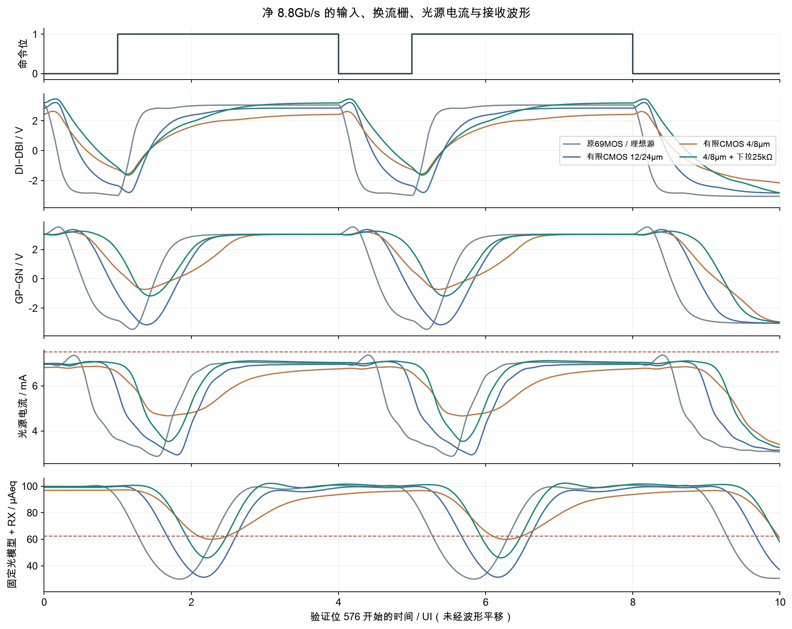
弱输入级DI上升沿比一个线路UI更长，孤立比特未充分建立就开始反向变化，后级换流不完整。加宽恢复的是实际充放电能力，不只是调整整体延迟。
OPEN MICROLED DRIVER ASIC · 2026-11-15 · 原理图级研究
VCSEL · 单项修改如何改变充放电
| 候选 / 净Gb/s | DI高电平 / V | 上升 / ps | 下降 / ps |
|---|---|---|---|
| 单级 + 12/24 µm输入 / 6.4 | 2.849 | 74.09 | 52.63 |
| 单级 + 12/24 µm输入 / 8.8 | 2.849 | 73.86 | 52.49 |
| 单级 + 4/8 µm输入 / 6.4 | 2.446 | 168.86 | 103.82 |
| 单级 + 4/8 µm输入 / 8.8 | 2.446 | 168.50 | 103.75 |
| 单级 + 4/8 µm + 25 kΩ / 6.4 | 3.202 | 149.60 | 131.19 |
| 单级 + 4/8 µm + 25 kΩ / 8.8 | 3.202 | 149.33 | 130.91 |
边沿按各自两态DC端点定义10-90%，只统计验证段中前后至少连续3位的转换；这里列中位数，不用于重新选择接收相位。弱输入DI高电平约2.446 V，下拉分流约0.978 mA：50+150 Ω串联电阻压降约0.196 V，有限上拉MOS另有约0.658 V压降，使d_src从3.3 V降至2.642 V。
加宽使上、下沿都缩短，但命令端栅负载也增加。25 kΩ降低静态分流、恢复较高电平，却减弱向地下拉并改变后级翻转过程；下降沿反而变慢。这是为何静态功率最小的候选不一定适合最高速率。
25 kΩ在6.4 Gb/s虽通过，时间仅比0.37 UI门槛多约0.51 ps；8.8 Gb/s失败。当前将12/24 µm冻结为本轮复核对象，不等于预选最终芯片架构。
OPEN MICROLED DRIVER ASIC · 2026-11-15 · 原理图级研究
VCSEL · 冻结后复核与仍未闭合的边界
| 数据与步长 | 幅度 µAeq | 时间 UI | E+ pJ/b | 联合 |
|---|---|---|---|---|
| 新留出8192 / S40 | 29.9357 | 0.438616 | 4.717466 | 通过 |
| 开发片段 / S40 | 29.9066 | 0.438266 | 4.710622 | 通过 |
| 开发片段 / S80 | 29.9100 | 0.438310 | 4.710616 | 通过 |
候选先冻结为Wn/Wp=12/24 µm、L=0.28 µm、内部150 Ω和2.5 kΩ下拉，再执行最大时间步长由UI/40减为UI/80及偏移8192的新片段。应力筛查仍包括新增4只输入MOS，不能只检查69 MOS核心。
物理断开上游的DC诊断中，DI=DBI=0 V、GP=GN≈3.10016 V，光源电流仍约3.98068 mA。输入下拉定义默认逻辑，却没有关光；独立VCSEL关断需要控制偏置和调制支路，再验证掉电回灌、先后上电与残余发光。这次断开实验不等于上游掉电试验。
新输入器件没有新版图/PEX、PVT/失配和实际PAD/ESD验证。8.8 Gb/s通过只对应列出的条件；32 Gb/s目标仍未实现，VCSEL连续电热和独立保护也未在本轮取得资格。
OPEN MICROLED DRIVER ASIC · 2026-11-15 · 原理图级研究
MicroLED · 连续供能与电容储能
本轮在同一次SPICE瞬态内连续发送4个相同4736位PRBS片段，净1.6 Gb/s，每帧2.56 µs，共10.24 µs。完整电流先经过一次200 ps光学极点和1 GHz RX，再切帧评分，避免滤波器状态被逐帧重置。电脑的求解耗时不是器件运行时间；这里验证的电路时间只有10.24 µs。
A的两条输出轨各有100 kΩ馈电电阻和10 nF电容，被动RC约1 ms。但它还有主动分流调节；不能仅凭RC直觉断言会失效，也不能用一帧结果声明长期稳定。实际用逐帧供能、轨端点变化与显式储能核对。
每帧分别积分所有七个源端：VIN、VDD、VREF、VLED、VD0、VD1、VDISABLE。电容储能差按ΔU=½C(V_end²−V_start²)计算，电感按½L(I_end²−I_start²)。负ΔU表示该储能元件向外释放能量。
这些瞬态从已求得的直流工作点开始。电源从零上电、参考建立和初始电容充电的全过程不在本轮连续数据帧能耗内。
监测显式C/L不等于完整能量守恒模型：MOS内部电荷和光源动态储能没有全部闭合，光学代理也不是电光热守恒模型。因此源端能耗不能直接写成热耗散。
OPEN MICROLED DRIVER ASIC · 2026-11-15 · 原理图级研究
A · 连续四帧的实际结果
| 帧 | E+ pJ/b | 净能量 pJ/b | 固定相位幅度 | 固定相位时间 |
|---|---|---|---|---|
| 1 | 1.141884 | 1.051584 | 17.354 µAeq | 0.446134 UI |
| 2 | 1.163417 | 1.073107 | 17.364 µAeq | 0.446911 UI |
| 3 | 1.163416 | 1.073104 | 17.365 µAeq | 0.447067 UI |
| 4 | 1.163415 | 1.073103 | 17.365 µAeq | 0.447095 UI |
最后两帧E+相对变化：-0.00002779%；末帧所监测轨最大端点变化：0.001813 mV。每帧仍使用首帧训练得到的采样相位，另保留逐帧训练结果。
| 帧 | 显式电容ΔU代数和 / pJ | 显式电容|ΔU|合计 / pJ |
|---|---|---|
| 1 | -94.22800 | 94.22957 |
| 2 | -0.34562 | 0.34572 |
| 3 | 0.02778 | 0.17267 |
| 4 | 0.01314 | 0.04562 |
有限窗口筛查：末两帧E+变化≤0.1%，监测轨端点变化≤0.1 mV，显式电容|ΔU|≤每帧源净能量的0.1%。通过只说明这个重复片段的电气响应接近周期状态；未测长连0/1、整周期PRBS、热稳态或寿命。
OPEN MICROLED DRIVER ASIC · 2026-11-15 · 原理图级研究
B · 连续四帧的实际结果
| 帧 | E+ pJ/b | 净能量 pJ/b | 固定相位幅度 | 固定相位时间 |
|---|---|---|---|---|
| 1 | 0.847593 | 0.737211 | 20.348 µAeq | 0.425136 UI |
| 2 | 0.856386 | 0.746005 | 20.347 µAeq | 0.425134 UI |
| 3 | 0.856386 | 0.746005 | 20.347 µAeq | 0.425134 UI |
| 4 | 0.856386 | 0.746005 | 20.347 µAeq | 0.425134 UI |
最后两帧E+相对变化：-0.00000739%；末帧所监测轨最大端点变化：0.000017 mV。每帧仍使用首帧训练得到的采样相位，另保留逐帧训练结果。
| 帧 | 显式电容ΔU代数和 / pJ | 显式电容|ΔU|合计 / pJ |
|---|---|---|
| 1 | -35.99975 | 36.02986 |
| 2 | 0.00000 | 0.00000 |
| 3 | -0.00000 | 0.00000 |
| 4 | -0.00000 | 0.00000 |
有限窗口筛查：末两帧E+变化≤0.1%，监测轨端点变化≤0.1 mV，显式电容|ΔU|≤每帧源净能量的0.1%。通过只说明这个重复片段的电气响应接近周期状态；未测长连0/1、整周期PRBS、热稳态或寿命。
OPEN MICROLED DRIVER ASIC · 2026-11-15 · 原理图级研究
保护问题：偏置低，不等于发光通路已切断
A原先没有实现DISABLE。B原DISABLE能把参考偏置拉低，但数据仍翻转，前馈电容仍连接数据节点和输出。电容位移电流及重新充电可以绕过“偏置已关闭”的直觉。
新方案在LED阳极加入高边PMOS隔离，并在LED两端并联NMOS钳位。关断时切断LED阳极供电，并使两端电位靠近；实际先后需要由波形验证。B的参考保持工作，以避免补偿节点从零重新建立。参考始终工作会增加关断期间的静态功耗。
DISABLE由测试平台给出；本轮实现的是独立关断执行电路，没有新增过温/过流检测器、故障锁存或安全控制协议。
高边栅需要0/5 V控制，因此使用实际交叉耦合电平转换；没有用理想5 V逻辑开关代替。W=300 µm单PMOS第一次超出模型bin，失败日志保留；改成三只W=100 µm显式并联后，所有端区面积、周长和MOS应力分别计入。
研究关断目标：20 ns内|I_cond|≤0.1 µA并保持，恢复目标≤1 µs。0-0.1 µA区间是I-V参考外推；nA级结果只称数值关断筛查，不能当作实测漏光、安全或量产保证。
OPEN MICROLED DRIVER ASIC · 2026-11-15 · 原理图级研究
首版v2保护 · 可求解仍会失败
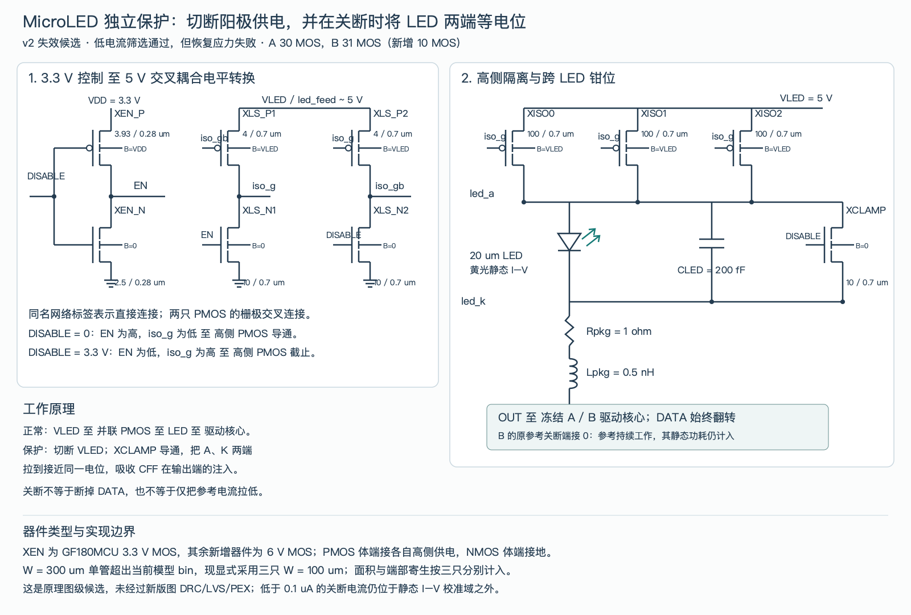
这是首个可求解的v2保护电路，后续应力检查失败。DISABLE高：PMOS截止、钳位导通；DISABLE低：恢复供电。钳位与隔离并非理想同时切换，必须检查全部端压。
OPEN MICROLED DRIVER ASIC · 2026-11-15 · 原理图级研究
从波形追到两条非预期电流路径
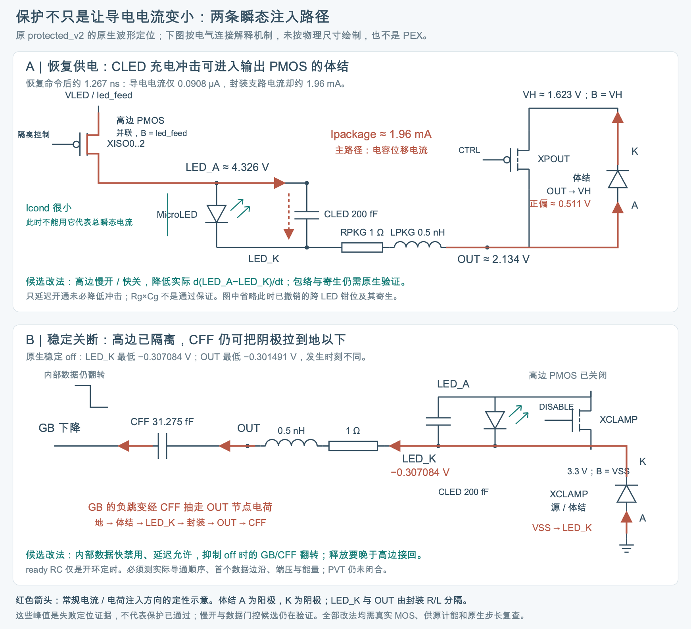
关断只看LED导电电流，会遗漏位移电流及MOS体结注入。修改必须针对真实电流路径；仅推迟开通而不降低实际电压斜率，也不保证消除冲击。
OPEN MICROLED DRIVER ASIC · 2026-11-15 · 原理图级研究
A · 限制开通斜率，同时保留快速关断
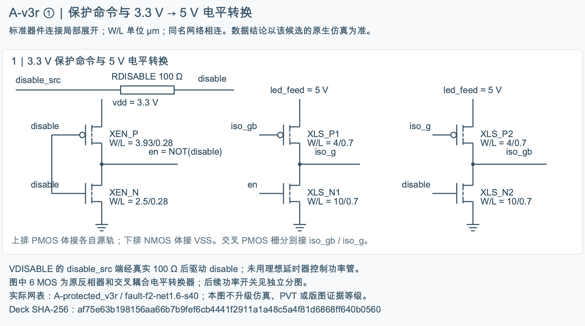
v2恢复时，LED电容重新充电，瞬时封装电流约1.96 mA，而同一时刻LED导电电流只有约0.091 µA。OUT被推高到VH以上，输出PMOS体结正偏约0.511 V。问题来自位移电流冲击，不是目标100 µA导电电流本身。
OPEN MICROLED DRIVER ASIC · 2026-11-15 · 原理图级研究
A · 用栅极RC减慢供电恢复
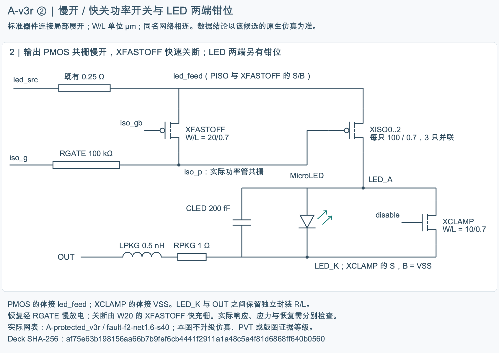
v3先加入慢开/快关，但在原理想保护命令源边界下，S40/S80都发生瞬态截断。v3r再把保护命令改为具有100 Ω源阻抗的实际节点，完整求解恢复；这是改变输入边界后重新验证，不是放宽收敛精度或掩盖截断。
新A总31 MOS。100 Ω须由将来的控制接口设计兑现；有限源阻抗只在本轮条件下使完整求解通过，尚未证明数值刚性的唯一成因，也不能保证任意控制器和PVT都通过。
OPEN MICROLED DRIVER ASIC · 2026-11-15 · 原理图级研究
B · 数据必须等发光通路建立后再进入
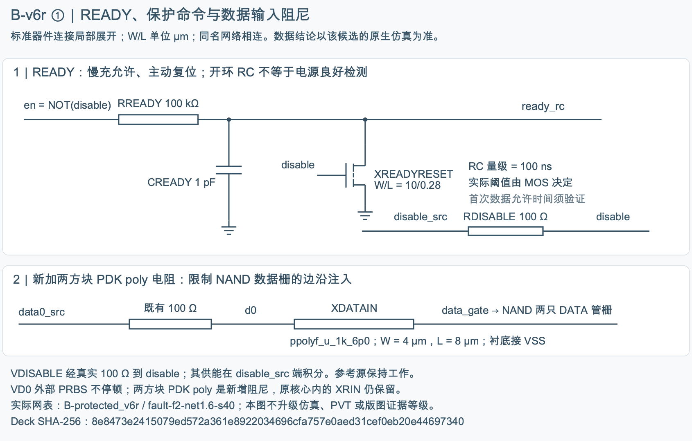
B原前馈电容仍把数据变化耦合到OUT。只关参考，关断期间仍有约5.628 µA导电峰值；加隔离和钳位后，LED_K仍可负冲到−0.307 V，引起NMOS体结正偏。因此关断时还要抑制内部的数据切换。
OPEN MICROLED DRIVER ASIC · 2026-11-15 · 原理图级研究
B · READY与数据门控的真实晶体管
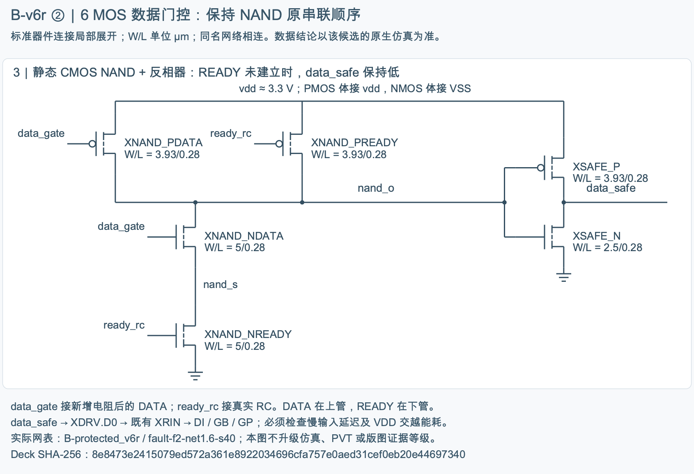
v4直接接收快速DATA边沿，新增NAND输出自身出现−0.358 V负冲，相关3.3 V MOS最大端压3.658 V。v5仅在DATA到逻辑栅前增加PDK电阻，一帧机制诊断中最大端压降到3.517 V。原有核心输入电阻保留，没有挪用。
READY是RC延迟，不是检测供电已经稳定的power-good比较器。慢边沿还可能增加逻辑交越电流；新增门控的能耗必须实算。
OPEN MICROLED DRIVER ASIC · 2026-11-15 · 原理图级研究
B · 快关不等于越快越好
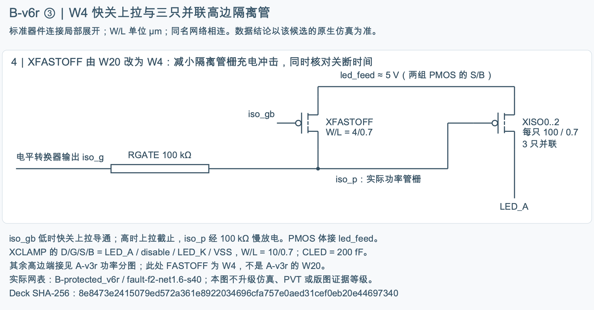
v3/v4的W=20 µm快关管把高边栅极拉得过急，经栅漏耦合抬高LED阳极，造成高边PMOS体结正偏。v6只把快关管缩到W=4 µm；v6r再加入有限保护命令源。缩小的是快关上拉的充栅能力；高边PISO尺寸与其Cgd没有缩小。边沿减缓降低耦合冲击，同时仍须满足20 ns关断目标。
B新增18 MOS，总39 MOS。隔离/钳位、慢开/快关、内部数据等待、输入阻尼承担不同功能，不能用一个“保护开关”理想符号替代全部代价。
OPEN MICROLED DRIVER ASIC · 2026-11-15 · 原理图级研究
保留失败：哪些改动有效，哪些仍不够
| 版本 | 观察到的问题 | 下一步针对性修改 |
|---|---|---|
| v2 · A/B | 可以关低导电电流，但A恢复体结0.511 V；B稳定关断LED_K约−0.307 V。 | 降低A恢复斜率；B还需抑制前馈数据注入。 |
| v3 · B | 恢复OUT峰值由3.703降到约2.953 V，但关断阳极抬到约5.517 V。 | 抑制快关耦合；增加内部数据等待。 |
| v4 · B | 高边体结约0.422 V；新NAND输出负冲−0.358 V。 | 分开处理高边快关和逻辑输入边沿。 |
| v5 · B | 一帧诊断：逻辑应力通过，高边体结仍约0.422 V。 | 只缩小XFASTOFF，检验其收益与关断延迟。 |
| v6 · B | DC通过，但瞬态到0.743 µs截断，不能评价完整关断。 | 引入100 Ω实际控制源后重新跑完整矩阵。 |
“候选没有通过”不等于整个电流转向架构不可行。这里定位到的是具体保护连接、边沿与负载耦合；修改后的电路仍需接受同样的接收、能耗、端压和模型范围约束。
OPEN MICROLED DRIVER ASIC · 2026-11-15 · 原理图级研究
100 Ω控制源：改变了什么，没有证明什么
原理想保护命令节点直接驱动多只MOS栅极，反馈电荷会被理想源瞬间吸收。新增100 Ω以后，实际DISABLE节点有有限变化，命令源端能量也按电阻前的节点统计。这是输入电路边界修改，不是仿真精度放松。
| 路线 | 旧可用前缀/µs | 全前缀max ΔI/µA | 边沿外max ΔI/µA | 边沿外max ΔOUT/mV |
|---|---|---|---|---|
| A | 2.676757 | 0.74975 | 0.04286 | 0.47197 |
| B | 0.743243 | 1.44535 | 0.03671 | 0.51131 |
只在旧仿真真正产生的共同时间范围内比较：把完整新波形插值到旧原生采样时刻。另排除关断/释放边沿各±25 ns，区分控制瞬态和其余正常响应。没有补造旧截断之后的波形，也没有把旧运行升级成成功。B旧前缀尚未到1.28 µs释放时刻，因此这里不支持旧、新恢复过程一致的结论。
共同前缀相近支持“有限源改动没有大幅改变已有正常响应”的判断，不能证明数值失败只有一个原因，更不能替代新电路全程、半步长与留出检查。两个保护命令仍由理想PWL产生，真正控制器的PAD/ESD与输出阻抗范围待验证。
OPEN MICROLED DRIVER ASIC · 2026-11-15 · 原理图级研究
正常连续通信 · 修改前后的同条件比较
| 路线 | 末帧E+ pJ/b | 幅度 / µAeq | 单侧时间 / UI |
|---|---|---|---|
| A 原基线 | 1.163415 | 17.365 | 0.447095 |
| A 新保护 | 1.158702 | 16.307 | 0.454226 |
| B 原基线 | 0.856386 | 20.347 | 0.425134 |
| B 新保护 | 1.015488 | 18.299 | 0.394663 |
净速率均为1.6 Gb/s，MicroLED负载、光学极点与接收器相同；各自连续4帧。以上时间余量使用首帧相位，四帧没有重置电容或接收滤波状态。
两路线通过本轮正常运行筛查后，仍不能推断在原先更高速度也通过。新增保护电容和逻辑需要重新扫描速率；本轮不以1.6 Gb/s结果宣布最高带宽。
OPEN MICROLED DRIVER ASIC · 2026-11-15 · 原理图级研究
A · 新保护加入后，正常通信是否退化
| 量 | 结果 |
|---|---|
| 网表 / 器件数 | protected_v3r / 31 MOS |
| DC低 / 高电流 | 24.9318 / 99.0625 µA |
| DC相对目标误差 | -0.2727 / -0.9375 % |
| 全程导电电流最小 / 最大 | 24.5619 / 100.5267 µA |
| 末帧E+ / E− / E_net | 1.158702 / 0.087119 / 1.071583 pJ/b |
| 末两帧E+变化 | -0.00002010 % |
| 末帧所监测轨端点最大变化 | 0.001166 mV |
| 全程最大体结正偏 | 0.093007 V；端压与体结筛查通过 |
能耗取同一10.24 µs连续仿真的末帧并覆盖完整源端；接收使用首帧冻结相位。两级电流的目标和±1% DC门槛保持不变；DC精度不代表切换峰值也在±1%内。
A高态误差距±1%门槛只剩0.0625个百分点，是名义筛查边缘；还不能声明跨工艺、温度与供电的±1%电流精度。
A高态电流因高边压降略低于基线。因此即使pJ/b略降，也不能把微小差值独立归因为效率提升。
OPEN MICROLED DRIVER ASIC · 2026-11-15 · 原理图级研究
B · 新保护加入后，正常通信是否退化
| 量 | 结果 |
|---|---|
| 网表 / 器件数 | protected_v6r / 39 MOS |
| DC低 / 高电流 | 24.9904 / 99.9702 µA |
| DC相对目标误差 | -0.0384 / -0.0298 % |
| 全程导电电流最小 / 最大 | 24.5688 / 110.5156 µA |
| 末帧E+ / E− / E_net | 1.015488 / 0.098375 / 0.917113 pJ/b |
| 末两帧E+变化 | -0.00000227 % |
| 末帧所监测轨端点最大变化 | 0.000005 mV |
| 全程最大体结正偏 | 0.193414 V；端压与体结筛查通过 |
能耗取同一10.24 µs连续仿真的末帧并覆盖完整源端；接收使用首帧冻结相位。两级电流的目标和±1% DC门槛保持不变；DC精度不代表切换峰值也在±1%内。
B的输入阻尼、READY与数据门控增大延迟及取能；必须与原无保护版本在同速率下比较，不能仅凭关断后电流低就判定更高效率。
正常运行的每位能耗同时包含输入与新增保护逻辑，不因这些器件承担安全控制功能就排除其消耗。这里的保护仍是研究执行电路，并无安全认证。
OPEN MICROLED DRIVER ASIC · 2026-11-15 · 原理图级研究
B · 新增能耗主要落在哪个端口
| 源端 | 原基线E+ | 新保护E+ | 差值 |
|---|---|---|---|
| VIN | 0.299430 | 0.297778 | -0.001651 |
| VDD | 0.206269 | 0.358541 | 0.152272 |
| VREF | 0.015625 | 0.015625 | 0.000000 |
| VLED | 0.306855 | 0.298021 | -0.008834 |
| VD0 | 0.028208 | 0.045523 | 0.017315 |
| VD1 | 0.000000 | 0.000000 | 0.000000 |
| VDISABLE | 0.000000 | 0.000000 | 0.000000 |
单位为pJ/尝试净位，取各自连续第四帧。VDD包含原缓冲与新增门控等逻辑供电；VD0为外部DATA命令端。电源边界一致，新增逻辑没有被放到统计范围之外。
总增量约0.1591 pJ/b，其中VDD增加约0.1523、DATA端增加约0.0173，其余部分有所抵消。证据把主要负担定位到了逻辑/输入侧，而不是证明LED本身效率下降。
这还不是逐MOS耗散分解。不能把全部增量归给交越电流或某一只管子；下一步先记录各级栅电荷与上下拉重叠电流，再在保持相同关断/接收门槛的前提下优化尺寸和阻尼。
OPEN MICROLED DRIVER ASIC · 2026-11-15 · 原理图级研究
A · 从关断到重新接收的量化结果
| 量 | 开发序列结果 |
|---|---|
| 关断命令 / 释放命令 | 640 ns / 1280 ns；1 ns命令边沿 |
| 最后超过0.1 µA的时刻 | 3.6972 ns（相对关断命令） |
| 20 ns后最大|I_cond| | 0.0060800 µA；仅模型延拓诊断 |
| 恢复接收的有限轨迹上界 | 17.5760 ns；之后持续3.818 µs满足采样余量 |
| 最终完整帧幅度 / 时间 | 16.2400 µAeq / 0.453603 UI |
| 全程最大体结正偏 | 0.219549 V（筛查线0.3 V） |
| 20 ns后关断窗口E+平均功率 | 1.547937 mW |
| 20 ns后关断窗口源端净功率 | 1.379813 mW |
功率取关断后20 ns至释放前的窗口；其中数据仍翻转、节点仍有储能变化，不是纯静态待机功耗。该窗口不承载正常有效数据，不能用其pJ/b宣称节能吞吐。
A的低残流并不代表所有电流都已消失：数据仍驱动输出节点，跨LED电容和保护支路仍有充放电电流。
恢复上界采用已知时钟、首帧训练相位及固定阈值，对释放后的样本逐个检查；不是CDR、帧同步或系统重新训练的实现时间。低电流/反向区没有实测校准，不能据此给出绝对漏光或激光安全结论。
OPEN MICROLED DRIVER ASIC · 2026-11-15 · 原理图级研究
B · 从关断到重新接收的量化结果
| 量 | 开发序列结果 |
|---|---|
| 关断命令 / 释放命令 | 640 ns / 1280 ns；1 ns命令边沿 |
| 最后超过0.1 µA的时刻 | 17.0409 ns（相对关断命令） |
| 20 ns后最大|I_cond| | 0.0890974 µA；仅模型延拓诊断 |
| 恢复接收的有限轨迹上界 | 68.3615 ns；之后持续3.768 µs满足采样余量 |
| 最终完整帧幅度 / 时间 | 18.2996 µAeq / 0.394663 UI |
| 全程最大体结正偏 | 0.198043 V（筛查线0.3 V） |
| 20 ns后关断窗口E+平均功率 | 0.766217 mW |
| 20 ns后关断窗口源端净功率 | 0.757190 mW |
功率取关断后20 ns至释放前的窗口；其中数据仍翻转、节点仍有储能变化，不是纯静态待机功耗。该窗口不承载正常有效数据，不能用其pJ/b宣称节能吞吐。
B在20 ns后窗口首个采样点，VAK仍约2.153 V，残流是继续衰减的电气尾段，不代表两端已经等电位。开发片段的关断电流余量仅10.903 nA，时间距20 ns限值仅2.959 ns。即使名义通过，仍要优先检查R/C容差、温度、控制源阻抗和不同故障相位。
恢复上界采用已知时钟、首帧训练相位及固定阈值，对释放后的样本逐个检查；不是CDR、帧同步或系统重新训练的实现时间。低电流/反向区没有实测校准，不能据此给出绝对漏光或激光安全结论。
OPEN MICROLED DRIVER ASIC · 2026-11-15 · 原理图级研究
冻结后确认：步长与新数据窗口
| 案例 | 关断/ns | 恢复/ns | 时间/UI | 体结/V |
|---|---|---|---|---|
| A 开发 S40 | 3.697 | 17.576 | 0.453603 | 0.219549 |
| A 半步长 S80 | 3.709 | 17.576 | 0.453591 | 0.219397 |
| A 新留出8192 | 2.930 | 19.198 | 0.453199 | 0.219550 |
| B 开发 S40 | 17.041 | 68.361 | 0.394663 | 0.198043 |
| B 半步长 S80 | 17.045 | 68.361 | 0.394662 | 0.198010 |
| B 新留出8192 | 17.043 | 68.902 | 0.394194 | 0.197936 |
S80把每线路UI的最大时间步长减半。新留出采用预声明PRBS15偏移8192，在电路与控制参数冻结后生成；没有用其结果继续调参。关断和恢复的时间定义与前页相同。
确认覆盖完整故障瞬态、全部MOS端压、源能量和最终完整接收帧。正常电流模型域由独立DC与连续案例核对；故障低电流及反向区继续标为外推。保留原始网表、运行器快照、命令波形、原生数据和独立复算记录。
这些确认提高了对当前确定性结果的信心，不等于噪声误码率、失配良率、任意异步故障相位或PVT通过。下一轮应把这些未建模因素逐项加入，而不是只增加同一序列的位数。
OPEN MICROLED DRIVER ASIC · 2026-11-15 · 原理图级研究
连续运行波形：能量变化与固定相位余量
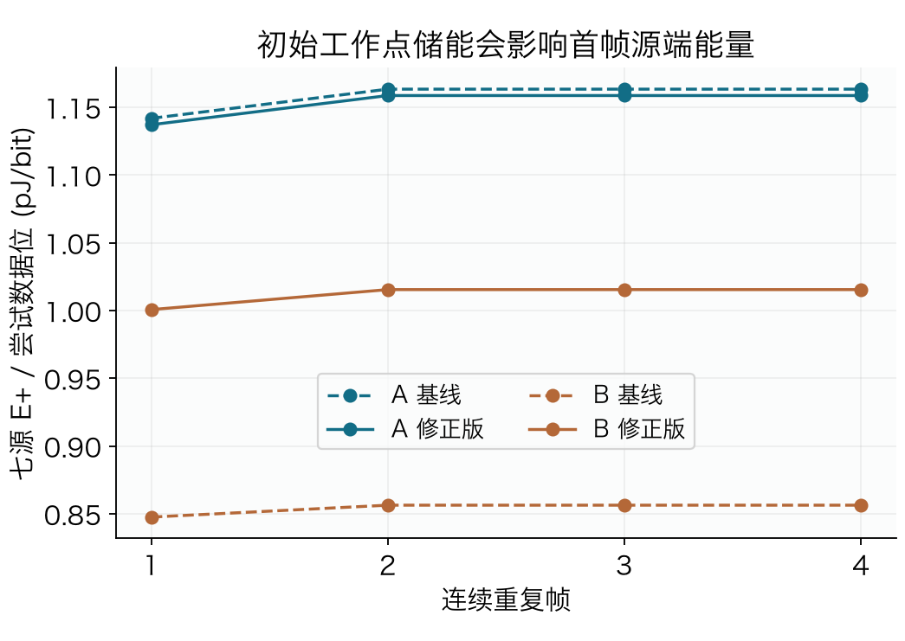
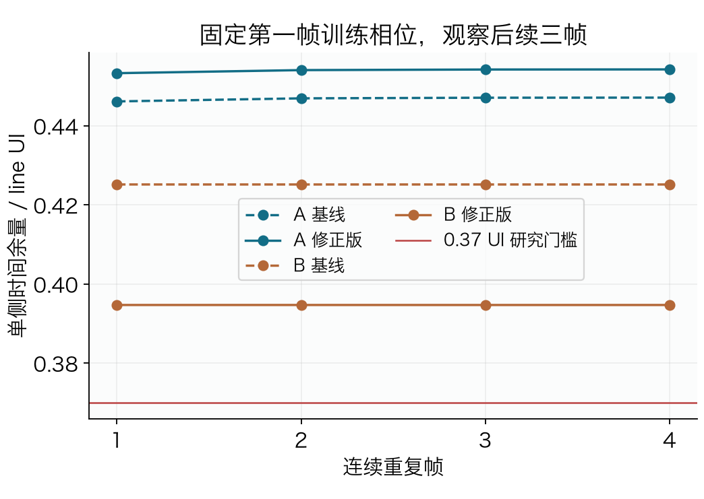
两图来自各自完整10.24 µs波形；并未证明热稳态或任意码型稳定。最终正常DC实际电流与能耗表必须一起读。
OPEN MICROLED DRIVER ASIC · 2026-11-15 · 原理图级研究
A · 从关断全程看到恢复体结应力
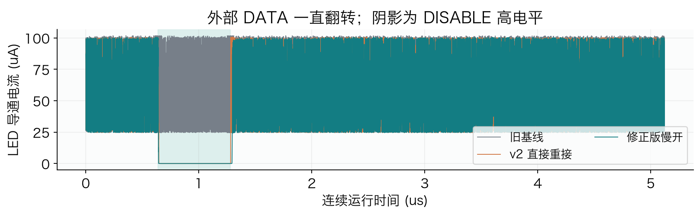
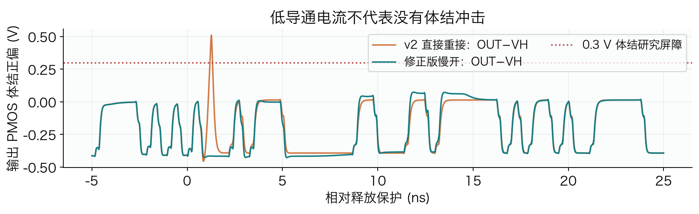
慢开把大幅瞬态充电分散到更长时间，降低输出体结注入；保护引入的电容与串联压降仍可能改变正常接收。
OPEN MICROLED DRIVER ASIC · 2026-11-15 · 原理图级研究
A · 导电电流与位移电流必须区分
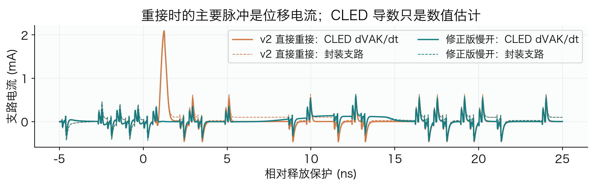
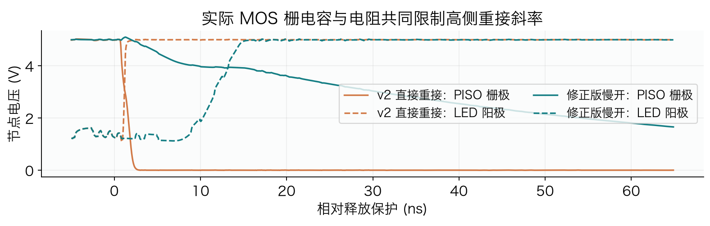
光学代理由LED导电电流驱动，不能把所有电容脉冲当成发光电流；但位移电流仍会影响电源、封装和MOS应力。
OPEN MICROLED DRIVER ASIC · 2026-11-15 · 原理图级研究
B · 关断时抑制内部前馈注入
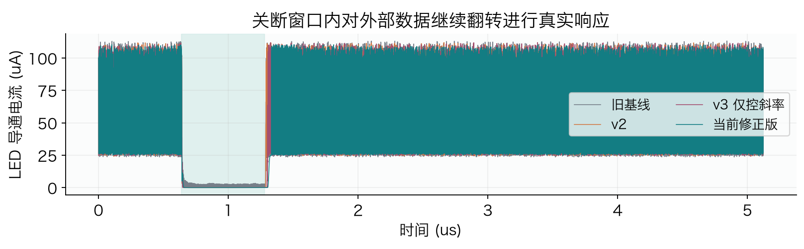
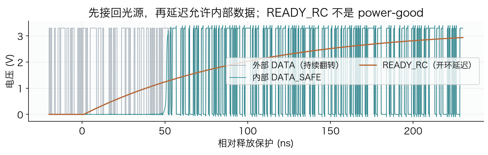
关断时间同时受高边栅充电、钳位、门控及残余电荷释放影响，不能只看EN逻辑何时翻转。
OPEN MICROLED DRIVER ASIC · 2026-11-15 · 原理图级研究
B · 把关断速度与过冲一起优化
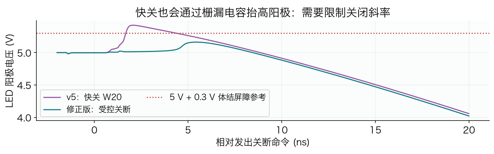
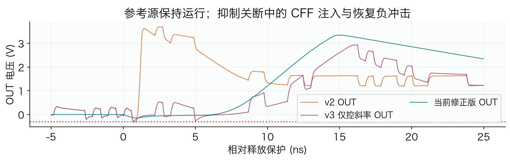
最终候选的开发片段关断约17 ns，距20 ns门槛仅约3 ns；PVT、控制接口阻抗和不同故障相位可能消耗这段余量，不能把名义通过写成充裕。
OPEN MICROLED DRIVER ASIC · 2026-11-15 · 原理图级研究
B · 关断尾段为什么仍值得优先研究
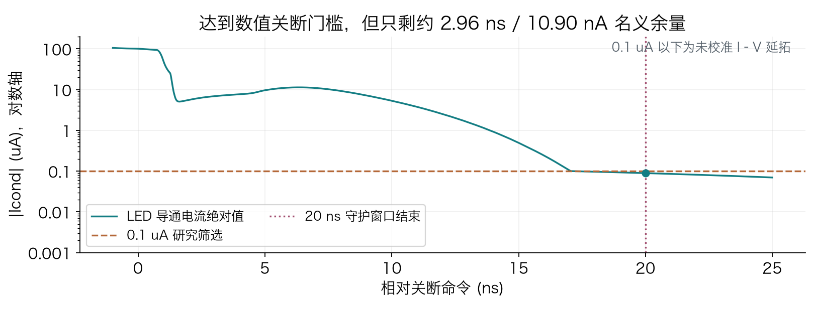
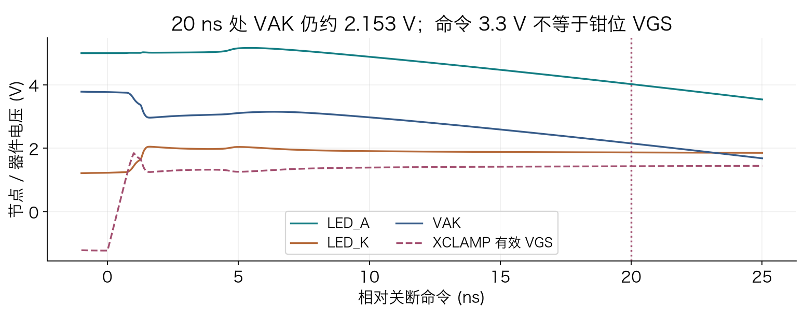
源端电位抬高且体端接地，VSB也约1.868 V。体效应与栅极驱动余量是下一步检查方向；本轮没有导出VTH或单项隔离证明，因此不把体效应写成唯一已确认原因。
下一轮先导出实际VTH、钳位沟道/体结电流与PISO电流，区分夹钳能力和高边尾流；再分别比较钳位栅驱动电压与器件宽度。加宽改变导通能力，并不直接提高栅驱动电压，还可能增大注入和能耗；任何更高栅压都须重新检查端压、交叠与完整接收。
OPEN MICROLED DRIVER ASIC · 2026-11-15 · 原理图级研究
校验测量链：失败记录怎样变成可信结论
| 实际发现 | 为什么不能直接使用 | 处理方法 |
|---|---|---|
| 单只300 µm PMOS超模型bin | 仿真器没有找到合法尺寸模型；这不是已证明该总宽度不能制造。 | 显式拆成3只100 µm器件，重新检查DC、端区寄生与全部端压；保留原日志。 |
| B首版参考关断脚的元数据仍映射DISABLE | 真实网表已接0，但部分自动端压测量用了旧节点；测量链与电路不一致。 | 原网表/结果不覆盖，追加reanalysis，按真实连接和原生波形重算，记录原SHA与修正。 |
| A慢开候选瞬态中止却返回exit 0 | S40在2.67676 µs、S80在65.946 ns中止；仿真器仍导出了已有波形。 | 完整时长断言阻止接收通过；保留截断数据，另修订实际控制源边界并重新验证。 |
| 展示抽点遗漏B关断负峰 | 预览曲线不能保证抓到最危险的窄脉冲。 | 全原生点计算应力：稳定关断LED_K约−0.307084 V，超过0.3 V体结筛查线。 |
原生完整时长、真实节点、源能量、接收标签、全部MOS应力和文件身份必须同时闭合。图用于解释；不能以图像平滑、退出码为0或“没有观察错位”代替验证。
OPEN MICROLED DRIVER ASIC · 2026-11-15 · 原理图级研究
为什么这还不是实际接口合规
本轮互补CMOS命令不是LVDS或CML。真正接入ASIC/FPGA，需要先指定I/O标准、差分幅度、共模、电源、端接、封装和线缆/基板，然后设计接收放大、电平转换及预驱动。所谓“缓冲部分”不保证在所有架构下通用。
例如AMD DS189 v1.11表11在100 Ω差分负载下给出的LVDS_25典型差分幅度为350 mV、共模1.25 V；明显不同于这里的0-3.3 V CMOS。这只是接口类别说明，未选择该FPGA，也未从DC表推断它支持8.8 Gb/s。
IBIS可描述接口pull-up/pull-down I-V、上升/下降V-t和引脚/封装寄生，适合联合传输线检查。它没有完整内部逻辑电路，不能单靠引脚模型计算整颗发送端功耗。
来源：AMD DS189，表11；TI SLYT390，PDF第1-3页。访问日期与适用范围见sources.json。
OPEN MICROLED DRIVER ASIC · 2026-11-15 · 原理图级研究
下一步先补哪些工程证据
优先补最小余量：A高态DC距±1%筛查线只剩约0.062个百分点；B关断仅约3 ns/11 nA余量，正常接收时间也只比门槛多约13.3 ps。VCSEL则先确定真实接口能否承担新的栅负载与供电取能。现阶段应保留架构选项，按失败机制配置验证资源。
| 顺序 | 具体工作 | 通过后才能支持的判断 |
|---|---|---|
| 1 · 接口和供电 | 指定真实PHY；加入PAD/ESD、IBIS或晶体管输出级、传输线/S参数；供电与参考源容差。 | 实际接口可驱动、能源边界更完整。 |
| 2 · 持续与故障 | 扩大连续时长、长连0/1/不均衡码型；掉电/棕断、异步关断、丢失时钟；保留全程储能状态。 | 运行/恢复范围，而不只是一帧。 |
| 3 · PVT与失配 | MOS和独立电阻角、温度、电源、器件参数、Monte Carlo；增加光学/RX不确定性。 | 研究点有足够余量，能否冻结候选。 |
| 4 · 物理与硬件 | 新版图、DRC/LVS、全电源/信号PEX，封装电磁与电热；器件S11/S21/L-I-V与实测眼图。 | 能否进入测试芯片和实物链路评价。 |
3.2 Gb/s MicroLED和32 Gb/s VCSEL仍是未闭合目标。本轮不扫描器件最高速率，也不预选最终架构；优先解决已暴露的接口与持续供电问题，再决定速度投入。
OPEN MICROLED DRIVER ASIC · 2026-11-15 · 原理图级研究
产品与流片：本轮交付处在什么位置
新增的是可审计的原理图、实验方法和受控修改。旧单像素或B路线曾做过的版图检查，只适用于当时网表与完整PDK配置；不能自动覆盖这次新增输入级、隔离管、钳位管或参考连接修改。
| 阶段 | 仍需交付/确认 |
|---|---|
| 器件与接口规格 | 发光器件型号或测量模型、工作电流/光功率、输入标准、故障安全目标、噪声/抖动/BER要求。 |
| 设计冻结 | PVT/失配/启动/连续/保护通过矩阵；参考源与外部元件容差、模型域和系统能耗边界。 |
| 物理实现 | 完整PDK和许可、PAD/ESD库、floorplan、电源回流、热设计、DRC/LVS/PEX及后仿真。 |
| 制造交付 | 代工/MPW要求的GDSII或OASIS、层映射、签核报告、网表和版本、封装bond图与测试计划；以具体制造方要求为准。 |
| 样片评价 | 电测、保护故障注入、光学调制响应、接收眼图/BER和温升，反校准模型。 |
当前开源环境可继续完成大量原理图、版图和寄生实验；制造接受与量产资格需要匹配工艺、正式规则和实物数据。本轮不产生可直接送厂制造的新芯片结论。
OPEN MICROLED DRIVER ASIC · 2026-11-15 · 原理图级研究
复现、失败保留与报告索引
公开源码、网表身份、汇总、图和报告在Git中；大型原生波形、执行快照与失败日志在有SHA-256清单的Release分卷中。运行器复用已存在且身份一致的结果时，不算新仿真。
入口：复现与恢复说明；本轮物理方法说明；科学完整性审查；原始归档清单。
基础环境为ngspice 47 KLU、Python 3.12与NumPy 2.5.3。模型版本、冻结输入和依赖使用原项目锁定信息。模型子集不是完整物理PDK；PDK、VM和环境文件不打进波形归档。
科学完整性通过，表示来源、条件、计算与失败记录能够互相对应；不表示所有候选功能都通过。远端备份也必须实际下载回读并验证归档和成员，不能只看上传命令成功。
本项目定位：独立的实验性研发方法验证与教学。下一阶段的核心价值，是把“为何失败、哪项修改有效、付出何种代价、在哪里仍不成立”持续转化为可复现的工程证据。